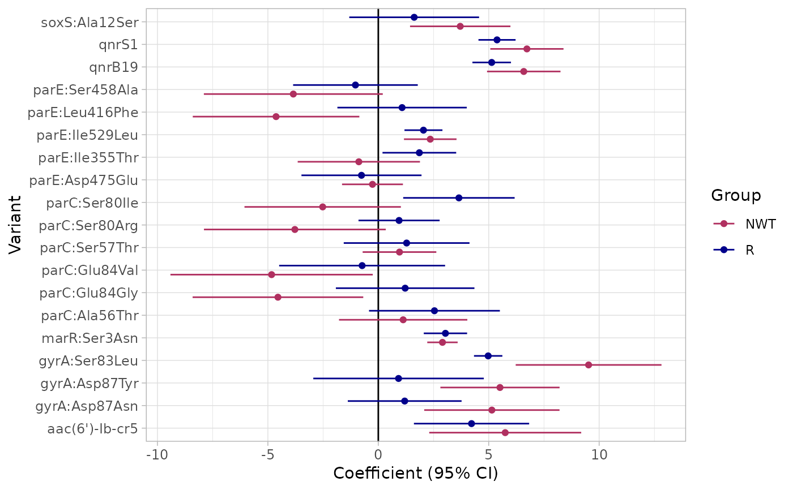
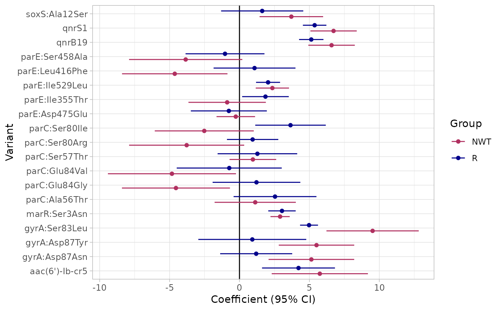

Performs logistic regression to analyze the relationship between genetic markers and phenotype (R, and NWT) for a specified antibiotic.
Usage
amr_logistic(
geno_table,
pheno_table,
antibiotic,
drug_class_list,
geno_sample_col = NULL,
pheno_sample_col = NULL,
sir_col = "pheno",
ecoff_col = "ecoff",
maf = 10,
fit_glm = FALSE,
single_plot = TRUE,
colors = c("maroon", "blue4"),
axis_label_size = 9,
marker_col = "marker.label"
)Arguments
- geno_table
A data frame containing the genotype data.
- pheno_table
A data frame containing the phenotypic data.
- antibiotic
A character string specifying the antibiotic to model using logistic regression.
- drug_class_list
A vector of drug class names. Used to subset the relevant markers for analysis.
- geno_sample_col
(Optional) A character string specifying the column in
geno_tablethat identifies the sample IDs. Defaults toNULL.- pheno_sample_col
(Optional) A character string specifying the column in
pheno_tablethat identifies the sample IDs. Defaults toNULL.- sir_col
(Optional) A character string specifying the column in
pheno_tablethat contains the phenotype values (e.g., resistance/susceptibility). Defaults to"pheno".- ecoff_col
(Optional) A character string specifying the column in
pheno_tablecontaining the ECOFF (epidemiological cutoff) values. Defaults to"ecoff".- maf
(Optional) An integer specifying the minimum allele frequency (MAF) threshold. Markers with a MAF lower than this value will be excluded. Defaults to 10.
- fit_glm
(Optional) Change to TRUE to fit model with glm. Otherwise fit model with logistf (default).
- single_plot
(Optional) A logical value. If
TRUE, a single plot is produced comparing the estimates for resistance (R) and non-resistance (NWT). Otherwise, two plots are printed side-by-side. Defaults toTRUE.- colors
(Optional) A vector of two colors, to use for R and NWT models in the plots. Defaults to
c("maroon", "blue4").- axis_label_size
(Optional) A numeric value controlling the size of axis labels in the plot. Defaults to 9.
- marker_col
(Optional) Name of the column containing the marker identifiers, whose unique values will be treate as predictors in the regression. Defaults to
"marker".
Value
A list with the following components:
bin_mat: The binary matrix of genetic data and phenotypic resistance information.modelR: The fitted logistic regression model for resistance (R).modelNWT: The fitted logistic regression model for non-resistance (NWT).plot: A ggplot object comparing the estimates for resistance and non-resistance with corresponding statistical significance indicators.
Examples
# Example usage of the amr_logistic function
result <- amr_logistic(
geno_table = import_amrfp(ecoli_geno_raw, "Name"),
pheno_table = ecoli_ast,
sir_col = "pheno_clsi",
antibiotic = "Ciprofloxacin",
drug_class_list = c("Quinolones"),
maf = 10
)
#> Defining NWT in binary matrix using ecoff column provided: ecoff
#> ...Fitting logistic regression model to R using logistf
#> Filtered data contains 3630 samples (793 => 1, 2837 => 0) and 19 variables.
#> Warning: logistf.fit: Maximum number of iterations for full model exceeded. Try to increase the number of iterations or alter step size by passing 'logistf.control(maxit=..., maxstep=...)' to parameter control
#> ...Fitting logistic regression model to NWT using logistf
#> Filtered data contains 3630 samples (929 => 1, 2701 => 0) and 19 variables.
#> Warning: logistf.fit: Maximum number of iterations for full model exceeded. Try to increase the number of iterations or alter step size by passing 'logistf.control(maxit=..., maxstep=...)' to parameter control
#> Generating plots
 # To access the plot:
print(result$plot)

# To access the plot:
print(result$plot)
